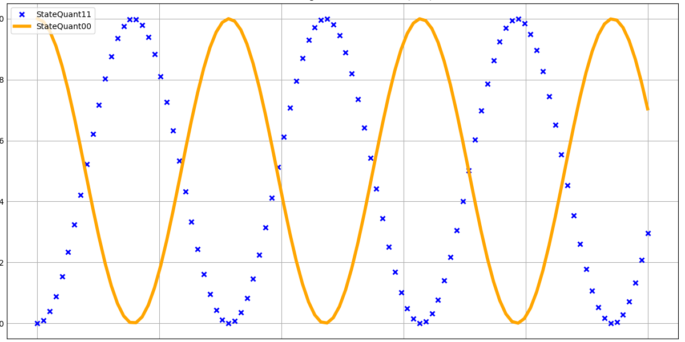

Ejemplo de uso del Método RK4
A continuación, se muestra un ejemplo de uso del método RK4 aplicado a la dinámica del sistema. Utilizamos los datos de stateQuant00 y stateQuant11 en función del tiempo.
import numpy as np
import matplotlib.pyplot as plt
# Definición de la matriz identidad
identityMatrix = np.array([[1, 0], [0, 1]])
print(identityMatrix)
# Operaciones con matrices
identityMatrix.shape
identityMatrix + identityMatrix
# Matriz de ejemplo
aEx = np.array([[0, 1], [1, 0]])
np.dot(aEx, aEx) # Producto matricial A*B
# Constante imaginaria
iConst = 1.0j
print(iConst)
# Operador
oOper = np.array([[0, 1], [1, 0]])
print(oOper)
# Estado inicial
yInit = np.array([[1, 0], [0, 0]])
print(yInit)
# Definición de la función de dinámica
def dyn_generator(oper, state):
return -1 * 1.0j * (np.dot(oper, state) - np.dot(state, oper))
# Evaluar la función de dinámica
print(dyn_generator(oOper, yInit))
# Definición de la función RK4
def rk4(func, oper, state, h):
k_1 = h * func(oper, state)
k_2 = h * func(oper, state + k_1 / 2)
k_3 = h * func(oper, state + k_2 / 2)
k_4 = h * func(oper, state + k_3)
return state + 1 / 6 * (k_1 + 2 * k_2 + 2 * k_3 + k_4)
# Evaluar la función RK4
print(rk4(dyn_generator, oOper, yInit, 0.5))
# Crear el arreglo de tiempos
times = np.linspace(0, 10, num=100)
# Paso temporal
h = times[1]
# Copia profunda del estado inicial
yCopy = yInit.copy()
# Inicializar arreglos para almacenar resultados
stateQuant00 = np.zeros(times.size)
stateQuant11 = np.zeros(times.size)
# Bucle para actualizar el estado
for tt in range(times.size):
stateQuant00[tt] = yInit[0, 0].real
stateQuant11[tt] = yInit[1, 1].real
# Invocar la función RK4
yN = rk4(dyn_generator, oOper, yInit, h)
yInit = yN
# Graficar los resultados
plt.style.use('_mpl-gallery')
# Definir los datos para la gráfica
y = stateQuant00
x = times
y2 = stateQuant11
x2 = times
# Crear la gráfica
fig, ax = plt.subplots()
# Graficar los datos con colores diferentes
ax.plot(x2, y2, 'x', markeredgewidth=2, label='StateQuant11', color='blue') # Gráfica de stateQuant11 en azul
ax.plot(x, y, linewidth=4.0, label='StateQuant00', color='orange') # Gráfica de stateQuant00 en naranja
# Añadir etiquetas a los ejes y título
plt.xlabel('Tiempo (s)')
plt.ylabel('Estado')
plt.title('Método Runge-Kutta de orden 4 (RK4)')
plt.legend()
# Guardar la gráfica en la carpeta docs
plt.savefig('/home/celeste_us/metodoRK4/docs/grafica_rk4.png') # Guardar la gráfica
# Mostrar el gráfico en Jupyter Notebook
plt.show()
